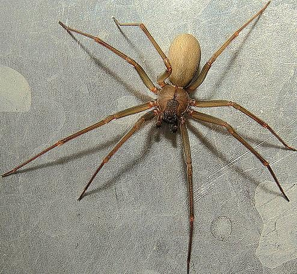
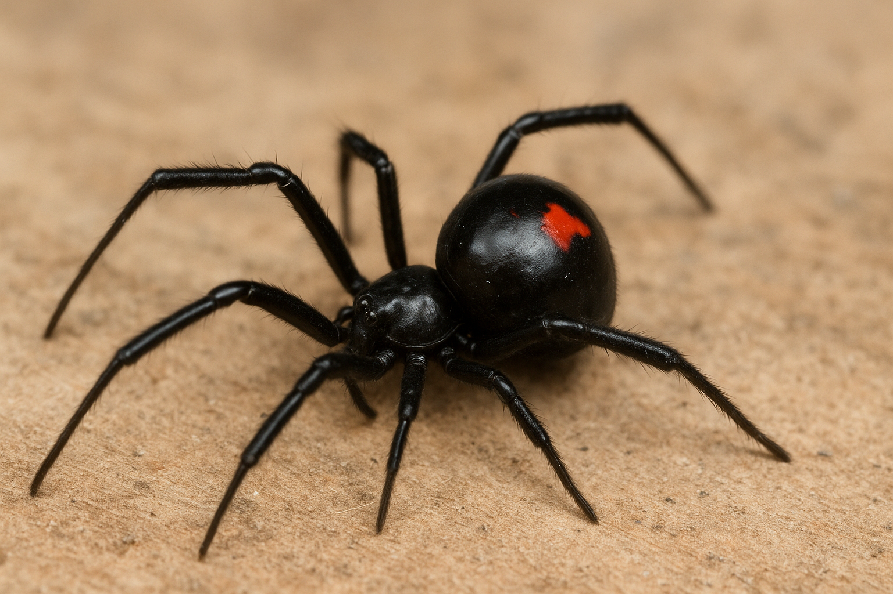
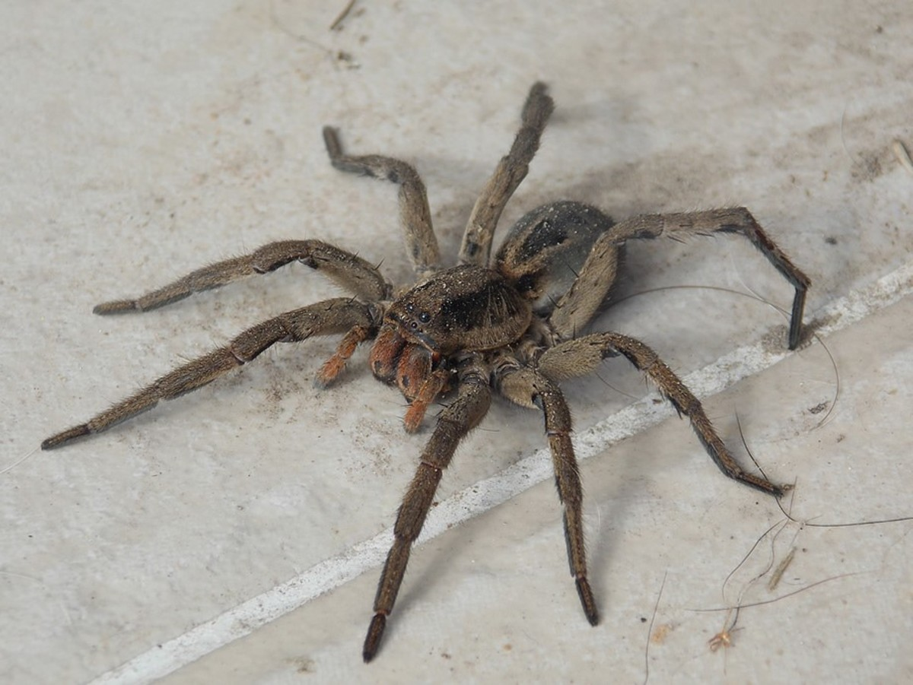

Fichas de Identificación Visual
Aprende a identificar las 3 especies de arañas de mayor riesgo sanitario en nuestra región.

Especie:
Loxosceles (Araña de los Rincones / Araña Violín)
Hábitat:
Interior de domicilios, detrás de muebles, zócalos, cajas de distribución oscuras y secas, escombros.
Características Clave de Identificación
Marca de Violín
Posee un dibujo en la parte superior del tórax (cefalotórax) que se asemeja a un violín invertido.
Disposición de Ojos
A diferencia de la mayoría que tiene 8, esta posee 6 ojos agrupados en 3 pares formando una "U".
Coloración
Color uniforme que varía del marrón claro al marrón oscuro. No tiene manchas atigradas en las patas.
Comportamiento
No es agresiva. Es tímida y rápida. Los accidentes ocurren al presionarla accidentalmente contra la piel.

Especie:
Latrodectus (Viuda Negra)
Hábitat:
Exteriores, zonas periurbanas, rastrojos, debajo de piedras, leña apilada o bases de postes de madera.
Características Clave de Identificación
Reloj de Arena
Presenta una mancha roja, naranja o amarillenta muy característica en forma de reloj de arena en el abdomen.
Cuerpo Globoso
Su abdomen es redondeado y esférico. Su color principal es un negro carbón muy brillante.
Telaraña Irregular
Construye telas muy desordenadas, sin patrón geométrico, cerca del suelo, con hilos extremadamente resistentes.
Riesgo
Veneno neurotóxico potente. Aunque es pequeña, su picadura genera dolor intenso, rigidez muscular y taquicardia.

Especie:
Phoneutria (Araña Bananera / Errante Brasileña)
Hábitat:
Hojarasca, troncos caídos, plantaciones. Deambula de noche. Puede buscar refugio en zapatos o cajas.
Características Clave de Identificación
Gran Tamaño
Es una araña de tamaño considerable (puede superar los 15 cm con las patas extendidas), de aspecto robusto y peludo.
Postura Defensiva
Ante una amenaza, no huye. Se apoya en sus patas traseras y levanta las delanteras mostrando sus colmillos.
Pelos Rojizos
Al adoptar su postura defensiva, suele exponer una zona de pelos de color rojo intenso alrededor de sus colmillos (quelíceros).
Araña Errante
No construye telas para cazar. Deambula activamente buscando presas, lo que aumenta las chances de encuentros fortuitos.